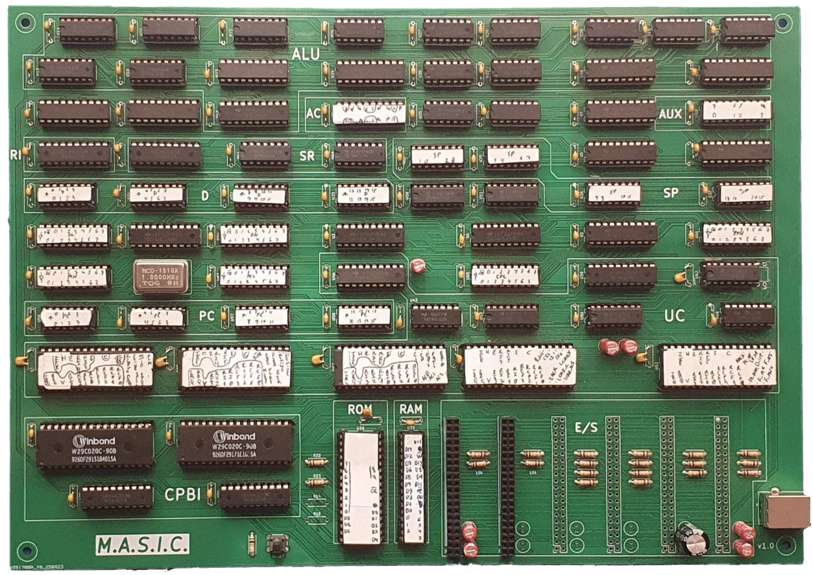
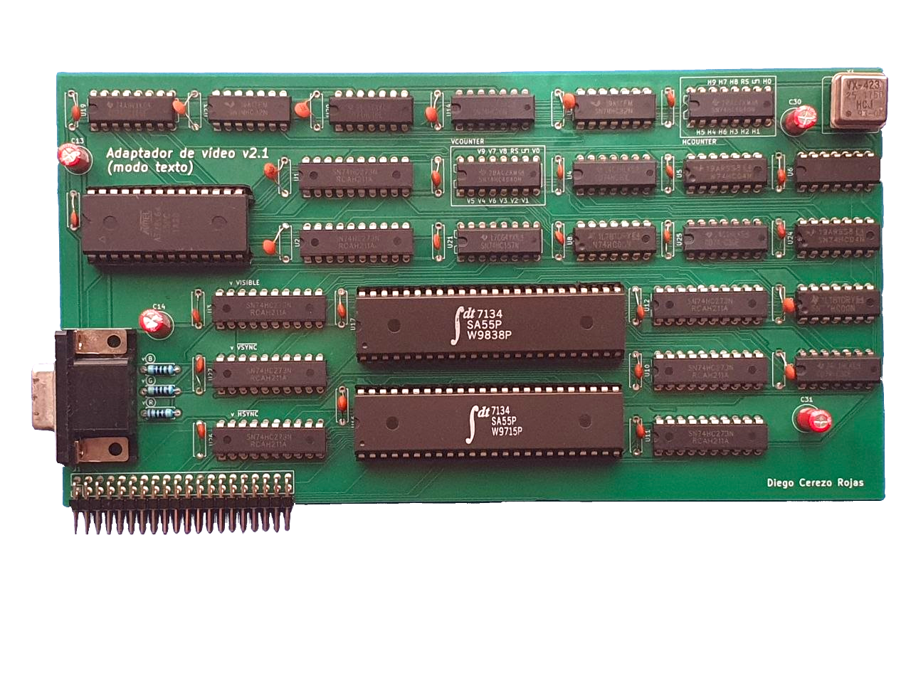
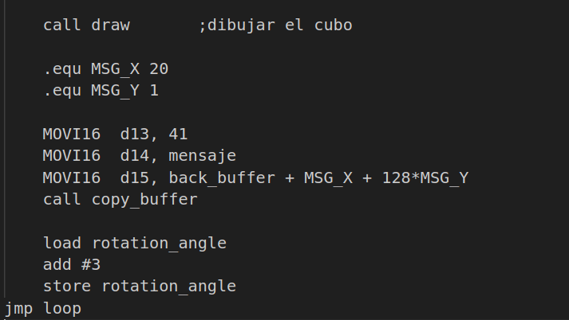

Proyectos
De todos mis proyectos, MASIC es mi mayor logro: el diseño y construcción de una arquitectura completa diseñada desde cero, con una ISA original, control microprogramado y hardware funcional implementado a un bajo nivel de integración.
MASIC
CPU

CPU original de 8 bits basada en acumulador, con ISA propia y control microprogramado: la parte más importante del proyecto MASIC, la construcción de un computador desde 0.
Ver detallesMASIC
Emulador

Emulador del sistema MASIC: depura el comportamiento de la CPU y la ejecución de programas. Esto permitió validar la arquitectura sin hardware físico, y es una parte importante del desarrollo de software en este computador.
Ver detallesMASIC
Adaptador de vídeo

Subsistema de visualización independiente hecho con lógica 74HC, circuitería de temporización, sincronización e interfaz dedicada.
Ver detallesMASIC
Ensamblador

Ensamblador personalizado con etiquetas, expresiones y macros anidadas para hacer la máquina más fácilmente programable.
Ver detallesASMtris
Implementación en ensamblador x86 del videojuego Tetris.
Ver en GitHub